Westminster — le Londres impérial et politique
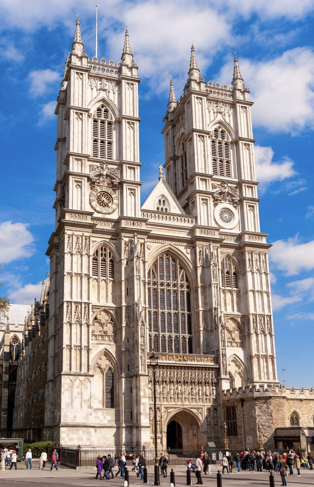
Le Londres impérial et politique — une promenade au cœur de l’histoire britannique.
Westminster n’est pas seulement un quartier de monuments. C’est un lieu où se croisent le pouvoir politique, la monarchie, la religion, l’histoire et la vie quotidienne londonienne. Sur quelques kilomètres, la promenade relie Trafalgar Square, Whitehall, Westminster Abbey et Buckingham Palace.
L’itinéraire commence au cœur de Londres, à Trafalgar Square, puis descend vers le centre politique du Royaume-Uni avant de rejoindre Westminster et, progressivement, les palais et jardins royaux.
Imperial and political London — a walk through the heart of British history.
Westminster is not just a neighbourhood of monuments. It is where political power, the monarchy, religion, history and everyday London life meet. Over a few kilometres, the walk links Trafalgar Square, Whitehall, Westminster Abbey and Buckingham Palace.
The route starts in the heart of London at Trafalgar Square, then heads towards the political centre of the United Kingdom before reaching Westminster and, gradually, the royal palaces and gardens.
El Londres imperial y político — un paseo por el corazón de la historia británica.
Westminster no es solo un barrio de monumentos. Es un lugar donde se cruzan el poder político, la monarquía, la religión, la historia y la vida cotidiana londinense. En pocos kilómetros, el paseo une Trafalgar Square, Whitehall, Westminster Abbey y Buckingham Palace.
El itinerario empieza en el corazón de Londres, en Trafalgar Square, y desciende hacia el centro político del Reino Unido antes de llegar a Westminster y, poco a poco, a los palacios y jardines reales.
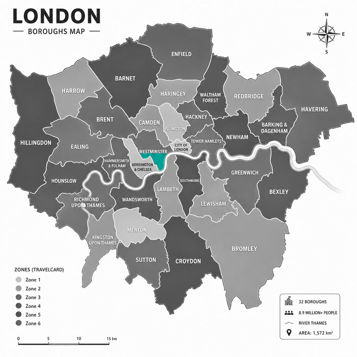
Westminster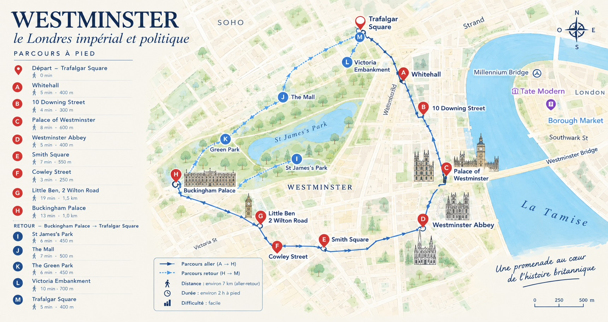
Plan de balade · cliquer pour agrandirL’esprit du parcours
Trafalgar Square → Whitehall → Downing Street → Westminster → Westminster Abbey → Smith Square → Victoria → Buckingham Palace → St James’s Park → The Mall → Green Park → Victoria Embankment → Trafalgar Square.
Une promenade d’environ 7 km aller-retour, qui permet de traverser en quelques heures plusieurs siècles d’histoire britannique. Du pouvoir politique à la monarchie, des grandes avenues aux jardins royaux, puis de la Tamise à Trafalgar Square : Westminster se découvre autant par ses monuments que par les petites histoires qui les entourent.
The spirit of the walk
Trafalgar Square → Whitehall → Downing Street → Westminster → Westminster Abbey → Smith Square → Victoria → Buckingham Palace → St James’s Park → The Mall → Green Park → Victoria Embankment → Trafalgar Square.
A walk of about 7 km there and back, crossing several centuries of British history in a few hours. From political power to the monarchy, from grand avenues to royal gardens, then from the Thames to Trafalgar Square: Westminster is discovered as much through its monuments as through the small stories around them.
El espíritu del recorrido
Trafalgar Square → Whitehall → Downing Street → Westminster → Westminster Abbey → Smith Square → Victoria → Buckingham Palace → St James’s Park → The Mall → Green Park → Victoria Embankment → Trafalgar Square.
Un paseo de unos 7 km de ida y vuelta, que permite atravesar en pocas horas varios siglos de historia británica. Del poder político a la monarquía, de las grandes avenidas a los jardines reales, y del Támesis a Trafalgar Square: Westminster se descubre tanto por sus monumentos como por las pequeñas historias que los rodean.
À faire
A — Whitehall · Le cœur du pouvoir britannique
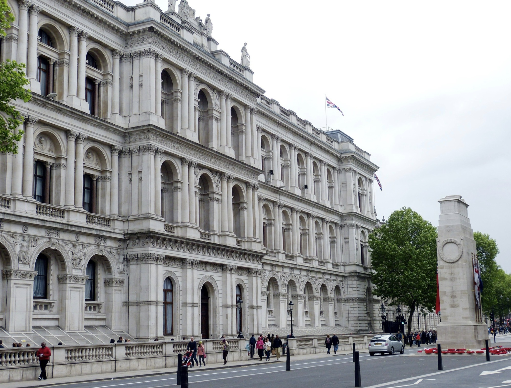
Depuis Trafalgar Square, dirigez-vous vers Whitehall, grande artère qui relie Trafalgar Square au Parlement. Aujourd’hui encore, cette rue concentre plusieurs institutions majeures du gouvernement britannique. C’est ici que l’on ressent le mieux cette atmosphère particulière de Westminster : ministères, fonctionnaires, policiers, diplomates et visiteurs se croisent dans un même décor historique.
L’anecdote : le nom Whitehall vient du palais de Whitehall, qui occupait autrefois une grande partie du secteur. Le palais fut la résidence principale des souverains anglais pendant plusieurs siècles avant d’être largement détruit par un incendie en 1698. En marchant ici, on traverse donc littéralement l’ancien centre du pouvoir monarchique anglais.
À observer : les bâtiments officiels, les gardes à cheval et l’architecture monumentale qui donne à Whitehall son caractère solennel.
A — Whitehall · The heart of British power
From Trafalgar Square, head down Whitehall, the broad avenue that links the square to Parliament. It still concentrates several major institutions of the British government. This is where you feel Westminster’s particular atmosphere: ministries, civil servants, police, diplomats and visitors sharing the same historic setting.
Anecdote: the name Whitehall comes from the Palace of Whitehall, which once covered much of this area. It was the main residence of English monarchs for centuries before a fire largely destroyed it in 1698. Walking here, you are literally crossing the former centre of English royal power.
Look out for: official buildings, Horse Guards and the monumental architecture that gives Whitehall its solemn character.
A — Whitehall · El corazón del poder británico
Desde Trafalgar Square, dirígete hacia Whitehall, la gran avenida que une la plaza con el Parlamento. Sigue concentrando varias instituciones importantes del gobierno británico. Aquí se siente mejor esa atmósfera particular de Westminster: ministerios, funcionarios, policías, diplomáticos y visitantes se cruzan en el mismo decorado histórico.
Anécdota: el nombre Whitehall viene del palacio de Whitehall, que ocupaba gran parte de la zona. Fue la residencia principal de los soberanos ingleses durante siglos antes de ser destruido en gran medida por un incendio en 1698. Al caminar aquí, se atraviesa literalmente el antiguo centro del poder monárquico inglés.
Observa: los edificios oficiales, la guardia a caballo y la arquitectura monumental que da a Whitehall su carácter solemne.
B — 10 Downing Street · La porte la plus célèbre de la politique britannique
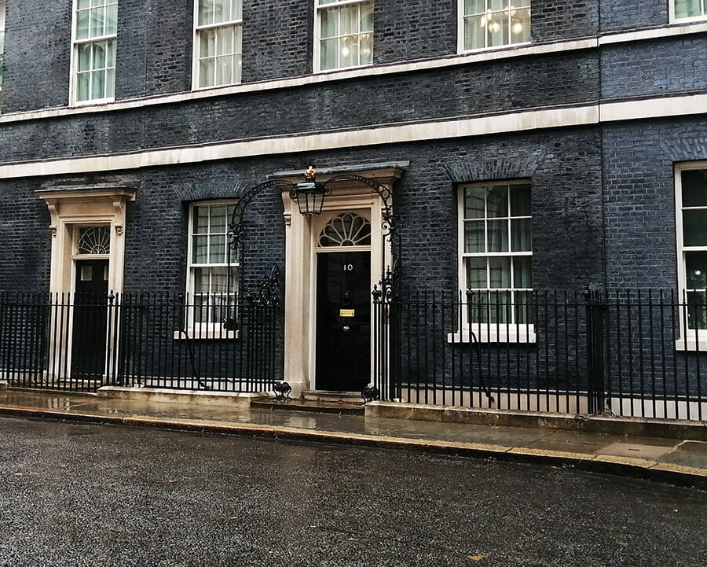
À quelques pas de Whitehall se trouve 10 Downing Street, résidence officielle du Premier ministre britannique. La fameuse porte noire est devenue l’un des symboles politiques les plus connus du Royaume-Uni. Pourtant, derrière cette porte relativement discrète se trouve un ensemble beaucoup plus vaste que ne le laisse imaginer la façade.
L’anecdote : la porte du 10 Downing Street est devenue tellement célèbre qu’elle est aujourd’hui presque plus connue que le bâtiment lui-même. Elle porte traditionnellement le numéro 10, avec la fameuse boîte aux lettres noire portant l’inscription First Lord of the Treasury. Cette fonction est historiquement liée au poste de Premier ministre.
Et surtout, ne cherchez pas à sonner : la rue est protégée et l’accès au bâtiment est très strictement contrôlé. Le petit plaisir du parcours : prendre quelques secondes pour observer les détails de la porte et imaginer les décisions politiques prises derrière ces murs.
À savoir : le 10 Downing Street n’est pas ouvert aux visites touristiques. Mais, lors de l’Open House Festival, quelques visiteurs peuvent exceptionnellement franchir ses célèbres portes… sur tirage au sort.
B — 10 Downing Street · The most famous door in British politics
A few steps from Whitehall stands 10 Downing Street, the official residence of the British Prime Minister. The famous black door has become one of the best-known political symbols in the UK — yet behind that relatively discreet door lies a far larger complex than the façade suggests.
Anecdote: the door of No. 10 is now almost more famous than the building itself. It traditionally bears the number 10 and the black letterbox inscribed First Lord of the Treasury, a title historically tied to the office of Prime Minister.
Don’t try to ring the bell: the street is secured and access is tightly controlled. The small pleasure of the walk is to pause for a few seconds, study the details of the door and imagine the decisions taken behind those walls.
Note: 10 Downing Street is not open to tourist visits. During the Open House Festival, however, a few visitors may exceptionally go through its famous doors — by lottery.
B — 10 Downing Street · La puerta más famosa de la política británica
A pocos pasos de Whitehall está el 10 Downing Street, residencia oficial del primer ministro británico. La famosa puerta negra se ha convertido en uno de los símbolos políticos más conocidos del Reino Unido. Detrás de esa puerta relativamente discreta hay un conjunto mucho más amplio de lo que sugiere la fachada.
Anécdota: la puerta del 10 es hoy casi más famosa que el propio edificio. Lleva el número 10 y el buzón negro con la inscripción First Lord of the Treasury, cargo históricamente ligado al puesto de primer ministro.
No intentes llamar: la calle está protegida y el acceso está muy controlado. El pequeño placer del recorrido es detenerse unos segundos, observar los detalles de la puerta e imaginar las decisiones tomadas tras esos muros.
Importante: el 10 Downing Street no está abierto a las visitas turísticas. Durante el Open House Festival, sin embargo, algunos visitantes pueden excepcionalmente cruzar sus famosas puertas… por sorteo.
C — Palace of Westminster · Là où se décide une partie de l’avenir du Royaume-Uni
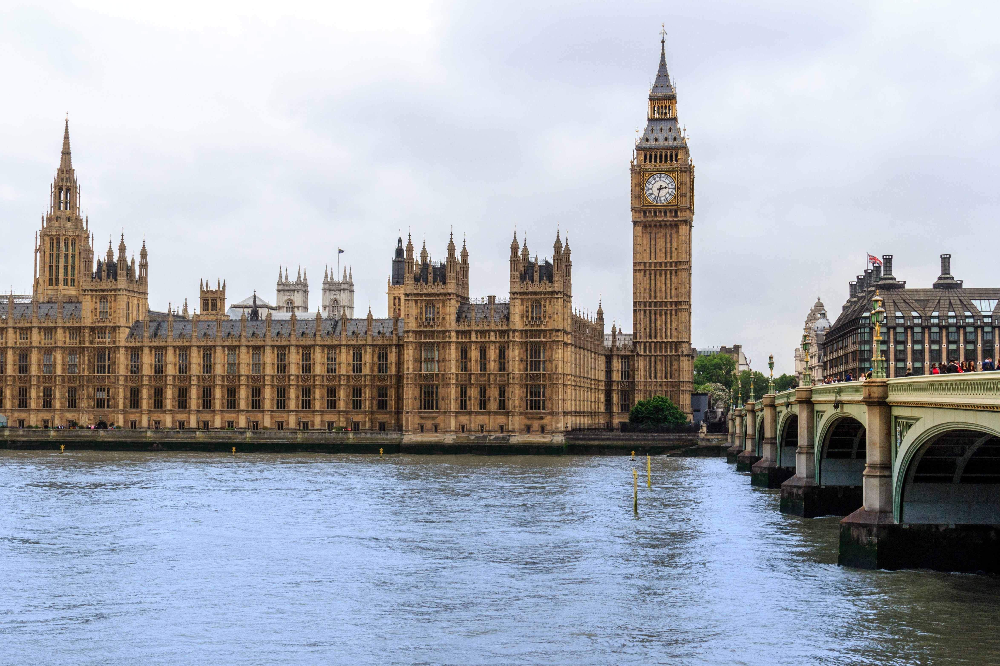
En poursuivant vers la Tamise, le paysage change complètement. Devant vous apparaît le spectaculaire Palace of Westminster, dominé par la silhouette de Big Ben. Le bâtiment abrite le Parlement britannique : la House of Commons et la House of Lords.
L’anecdote : le palais actuel n’est pas le palais médiéval d’origine. Un gigantesque incendie détruisit l’ancien Palais de Westminster en 1834. Le bâtiment que nous admirons aujourd’hui est principalement issu de la reconstruction du XIXᵉ siècle. Et une précision souvent oubliée : Big Ben désigne à l’origine la grande cloche, et non la tour elle-même. La tour porte aujourd’hui le nom d’Elizabeth Tower.
Le point photo : depuis Westminster Bridge, retournez-vous légèrement vers le palais. Vous obtenez l’une des vues les plus emblématiques de Londres : la Tamise + Big Ben + Palace of Westminster.
C — Palace of Westminster · Where part of the UK’s future is decided
Continuing towards the Thames, the landscape changes completely. The spectacular Palace of Westminster appears, dominated by the silhouette of Big Ben. The building houses the British Parliament: the House of Commons and the House of Lords.
Anecdote: today’s palace is not the original medieval one. A huge fire destroyed the old Palace of Westminster in 1834; what we admire now is largely a 19th-century rebuild. And a detail often forgotten: Big Ben originally names the great bell, not the tower. The tower is now called Elizabeth Tower.
Photo tip: from Westminster Bridge, turn slightly back towards the palace for one of London’s most iconic views: the Thames + Big Ben + Palace of Westminster.
C — Palace of Westminster · Donde se decide parte del futuro del Reino Unido
Al continuar hacia el Támesis, el paisaje cambia por completo. Aparece el espectacular Palace of Westminster, dominado por la silueta de Big Ben. El edificio alberga el Parlamento británico: la Cámara de los Comunes y la de los Lores.
Anécdota: el palacio actual no es el medieval original. Un gran incendio destruyó el antiguo Palace of Westminster en 1834; lo que admiramos hoy es sobre todo la reconstrucción del siglo XIX. Y un detalle a menudo olvidado: Big Ben designa en origen la gran campana, no la torre. La torre se llama hoy Elizabeth Tower.
Punto fotográfico: desde Westminster Bridge, gira ligeramente hacia el palacio para una de las vistas más emblemáticas de Londres: el Támesis + Big Ben + Palace of Westminster.
Big Ben — la cloche (et la tour) mythique de Londres
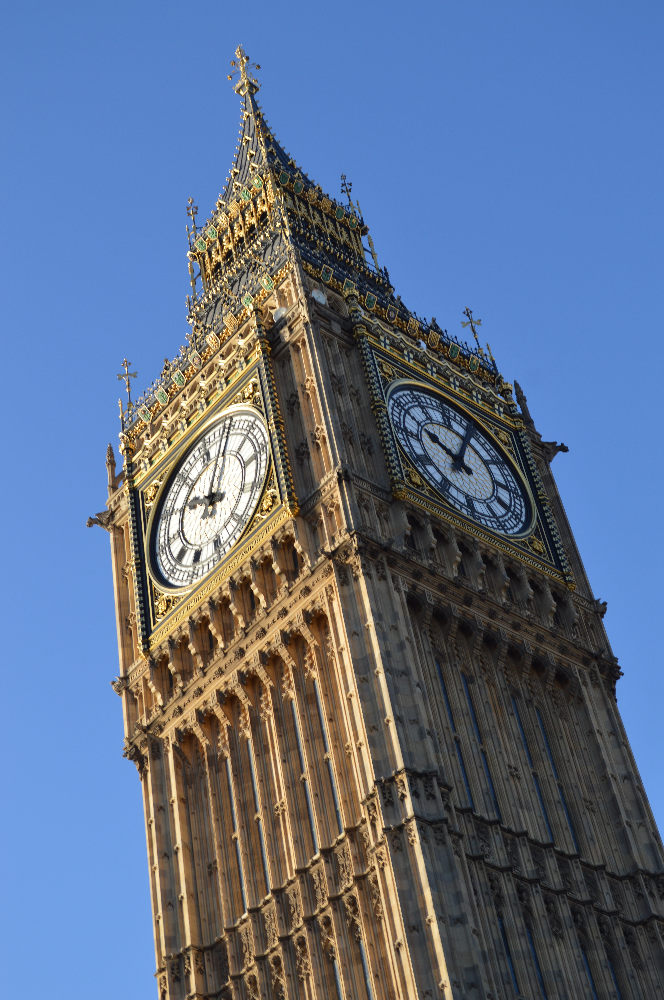
Quand on dit « Big Ben », on pense presque toujours à la grande tour horloge du Palace of Westminster. En réalité, Big Ben désigne d’abord la grande cloche qui sonne les heures. La tour elle-même s’appelait autrefois la Clock Tower ; depuis 2012, elle porte officiellement le nom d’Elizabeth Tower, en l’honneur du jubilé de diamant de la reine Elizabeth II.
La tour mesure environ 96 mètres. L’horloge, mise en service en 1859, est l’une des plus précises et des plus célèbres au monde. La cloche Big Ben pèse plus de 13 tonnes : son timbre grave, reconnaissable entre tous, rythme la vie politique et symbolique de Londres.
Pourquoi est-elle mythique ? Parce qu’elle incarne à la fois le Parlement, l’histoire britannique et l’image internationale de Londres. Films, cartes postales, journaux télévisés du Nouvel An : Big Ben est devenue un raccourci visuel pour « Londres » et pour le Royaume-Uni tout entier. Son cadran illuminé la nuit, face à la Tamise, reste l’un des spectacles les plus photographiés de la capitale.
L’anecdote : le surnom « Big Ben » viendrait soit de Sir Benjamin Hall, qui supervisait les travaux au moment de l’installation de la cloche, soit d’un boxeur lourd de l’époque, Benjamin Caunt, surnommé Big Ben. Personne n’est tout à fait d’accord — et c’est peut-être ce qui ajoute au mythe. Autre détail : la cloche s’est fissurée peu après sa mise en service ; on l’a retournée et on a un peu modifié le marteau pour qu’elle puisse continuer à sonner, avec un son légèrement différent de celui prévu à l’origine.
À noter : l’accès à l’intérieur de la tour est très limité (en général réservé aux résidents du Royaume-Uni sur réservation). Depuis le sol ou depuis Westminster Bridge, on en a toutefois l’une des plus belles vues de Londres.
Big Ben — London’s mythical bell (and tower)
When people say “Big Ben”, they almost always mean the great clock tower of the Palace of Westminster. In fact, Big Ben is primarily the name of the great hour bell. The tower itself was once called the Clock Tower; since 2012 it has been officially named Elizabeth Tower, in honour of Queen Elizabeth II’s Diamond Jubilee.
The tower stands about 96 metres high. The clock, first used in 1859, is one of the most accurate and famous in the world. The Big Ben bell weighs more than 13 tonnes: its deep, unmistakable chime sets the rhythm of political and symbolic London.
Why is it mythical? Because it stands for Parliament, British history and the international image of London all at once. Films, postcards, New Year’s broadcasts: Big Ben has become a visual shorthand for “London” and for the United Kingdom. Its illuminated dial at night, facing the Thames, remains one of the most photographed sights in the capital.
Anecdote: the nickname “Big Ben” may come either from Sir Benjamin Hall, who oversaw the works when the bell was installed, or from a heavyweight boxer of the time, Benjamin Caunt, known as Big Ben. No one agrees completely — which only adds to the myth. Another detail: the bell cracked soon after it entered service; it was turned and the hammer adjusted so it could keep ringing, with a slightly different tone from the one originally intended.
Note: access inside the tower is very limited (generally reserved for UK residents by appointment). From ground level or from Westminster Bridge, you still get one of London’s finest views.
Big Ben — la campana (y la torre) mítica de Londres
Cuando se dice «Big Ben», casi siempre se piensa en la gran torre del reloj del Palace of Westminster. En realidad, Big Ben designa sobre todo la gran campana que da las horas. La torre se llamó antes Clock Tower; desde 2012 lleva oficialmente el nombre de Elizabeth Tower, en honor del jubileo de diamante de la reina Isabel II.
La torre mide unos 96 metros. El reloj, puesto en marcha en 1859, es uno de los más precisos y famosos del mundo. La campana Big Ben pesa más de 13 toneladas: su timbre grave, inconfundible, marca el ritmo de la vida política y simbólica de Londres.
¿Por qué es mítica? Porque encarna a la vez el Parlamento, la historia británica y la imagen internacional de Londres. Cine, postales, retransmisiones de Año Nuevo: Big Ben se ha convertido en un atajo visual de «Londres» y del Reino Unido. Su esfera iluminada de noche, frente al Támesis, sigue siendo uno de los espectáculos más fotografiados de la capital.
Anécdota: el apodo «Big Ben» vendría o bien de Sir Benjamin Hall, que supervisaba las obras cuando se instaló la campana, o de un boxeador de la época, Benjamin Caunt, apodado Big Ben. Nadie se pone del todo de acuerdo — y eso forma parte del mito. Otro detalle: la campana se agrietó poco después de entrar en servicio; se la giró y se modificó el martillo para que pudiera seguir sonando, con un tono ligeramente distinto del previsto al principio.
Nota: el acceso al interior de la torre es muy limitado (en general reservado a residentes del Reino Unido con cita). Desde el suelo o desde Westminster Bridge se obtiene, no obstante, una de las mejores vistas de Londres.
D — Westminster Abbey · Le lieu où l’histoire britannique devient presque palpable
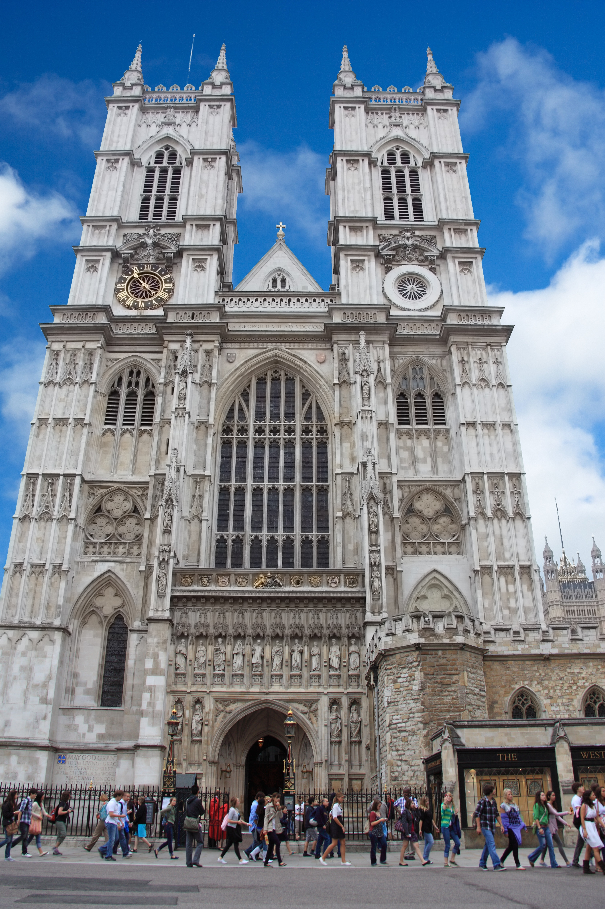
À quelques minutes du Parlement se trouve Westminster Abbey. Son architecture gothique contraste avec l’agitation des rues environnantes. En entrant dans son univers, on quitte presque instantanément le Londres moderne. C’est ici que sont célébrés les grands événements de la monarchie britannique, notamment les couronnements.
L’anecdote : depuis 1066, presque tous les monarques britanniques ont été couronnés à Westminster Abbey. L’abbaye est également un immense lieu de mémoire : souverains, écrivains, scientifiques et personnalités historiques y sont enterrés ou commémorés. Parmi les figures associées à l’abbaye se trouvent notamment Isaac Newton, Charles Darwin et Geoffrey Chaucer.
À prendre son temps : ne regardez pas uniquement la façade. Observez les sculptures, les tombeaux, les chapelles et les détails de la pierre. Westminster Abbey est davantage un livre d’histoire en trois dimensions qu’un simple monument.
D — Westminster Abbey · Where British history becomes almost tangible
A few minutes from Parliament stands Westminster Abbey. Its Gothic architecture contrasts with the bustle of the surrounding streets. Stepping into its world, you almost instantly leave modern London behind. This is where the great events of the British monarchy are celebrated, including coronations.
Anecdote: since 1066, almost every British monarch has been crowned at Westminster Abbey. It is also a vast place of memory: monarchs, writers, scientists and historical figures are buried or commemorated here — among them Isaac Newton, Charles Darwin and Geoffrey Chaucer.
Take your time: don’t only look at the façade. Notice the sculptures, tombs, chapels and stone details. Westminster Abbey is more a three-dimensional history book than a simple monument.
D — Westminster Abbey · Donde la historia británica se vuelve casi tangible
A pocos minutos del Parlamento está Westminster Abbey. Su arquitectura gótica contrasta con el bullicio de las calles. Al entrar en su mundo, se deja casi al instante el Londres moderno. Aquí se celebran los grandes acontecimientos de la monarquía británica, incluidos los coronamientos.
Anécdota: desde 1066, casi todos los monarcas británicos han sido coronados en Westminster Abbey. También es un inmenso lugar de memoria: soberanos, escritores, científicos y figuras históricas están enterrados o conmemorados aquí — entre ellos Isaac Newton, Charles Darwin y Geoffrey Chaucer.
Tómate tu tiempo: no mires solo la fachada. Observa esculturas, tumbas, capillas y detalles de la piedra. Westminster Abbey es más un libro de historia en tres dimensiones que un simple monumento.
E — Smith Square · Un Westminster plus discret

Quittez progressivement les grands axes pour rejoindre Smith Square. L’ambiance devient plus résidentielle et plus calme. C’est une excellente transition entre le Westminster monumental et un Londres plus discret.
L’anecdote : Smith Square est notamment connu pour St John’s Smith Square, une ancienne église devenue un lieu culturel et musical. Le quartier rappelle que Westminster ne se résume pas aux grandes institutions politiques : derrière les monuments les plus photographiés se cachent des rues, des places et des bâtiments qui racontent une autre histoire de Londres.
Pause idéale : c’est également un bon endroit pour faire une pause avant de reprendre la route vers Buckingham Palace.
E — Smith Square · A quieter Westminster
Gradually leave the main axes for Smith Square. The atmosphere becomes more residential and calm — an excellent transition between monumental Westminster and a more discreet London.
Anecdote: Smith Square is known for St John’s Smith Square, a former church turned cultural and music venue. It is a reminder that Westminster is not only political institutions: behind the most photographed monuments lie streets, squares and buildings that tell another London story.
Ideal pause: a good place to rest before heading on towards Buckingham Palace.
E — Smith Square · Un Westminster más discreto
Deja poco a poco los grandes ejes hacia Smith Square. El ambiente se vuelve más residencial y tranquilo: una excelente transición entre el Westminster monumental y un Londres más discreto.
Anécdota: Smith Square es conocido por St John’s Smith Square, antigua iglesia convertida en espacio cultural y musical. Recuerda que Westminster no se reduce a las instituciones políticas: detrás de los monumentos más fotografiados hay calles, plazas y edificios que cuentan otra historia de Londres.
Pausa ideal: buen lugar para descansar antes de continuar hacia Buckingham Palace.
F — Cowley Street · Quitter le Londres politique pour retrouver le Londres des rues
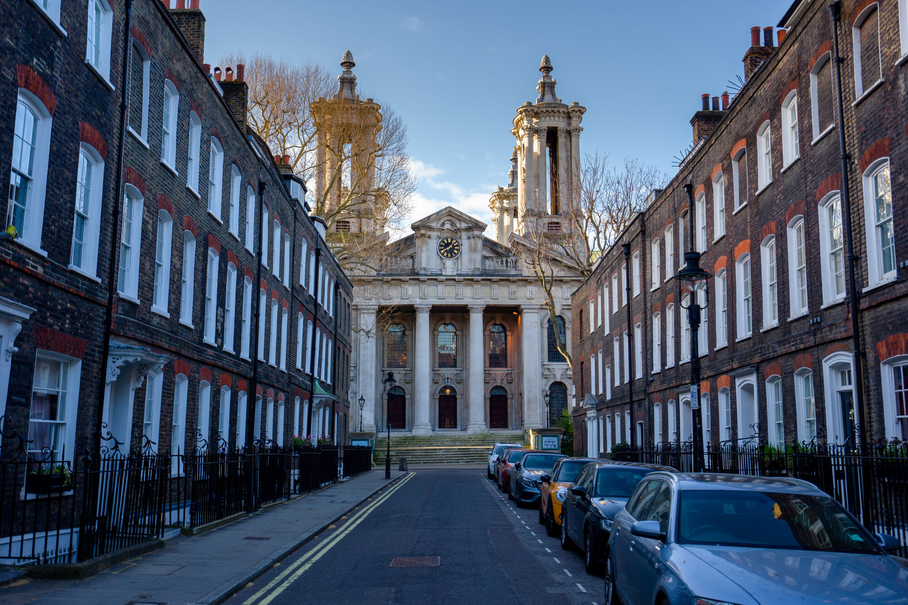
En poursuivant vers le sud-ouest, le parcours devient plus tranquille. Les grands bâtiments institutionnels laissent progressivement place aux rues londoniennes, aux façades élégantes et à une atmosphère plus locale. C’est l’un des moments où il faut ralentir le pas.
L’anecdote : à Westminster, les plus belles découvertes ne sont pas toujours les monuments les plus célèbres. Une porte ancienne, une façade en briques, une plaque commémorative ou une petite rue peuvent parfois raconter une histoire beaucoup plus intime que les grandes avenues.
Conseil : ne faites pas uniquement la promenade « carte en main ». Levez régulièrement les yeux.
F — Cowley Street · Leaving political London for street-level London
Continuing south-west, the route grows quieter. Institutional buildings give way to elegant façades and a more local feel. This is one of the moments to slow your pace.
Anecdote: in Westminster, the finest discoveries are not always the most famous monuments. An old door, a brick façade, a commemorative plaque or a small street can tell a more intimate story than the grand avenues.
Tip: don’t only walk “map in hand”. Look up often.
F — Cowley Street · Dejar el Londres político por el Londres de las calles
Al continuar hacia el suroeste, el recorrido se vuelve más tranquilo. Los grandes edificios institucionales dan paso a fachadas elegantes y a un ambiente más local. Es uno de los momentos para ralentizar el paso.
Anécdota: en Westminster, los mejores hallazgos no siempre son los monumentos más célebres. Una puerta antigua, una fachada de ladrillo, una placa o una calle pequeña pueden contar una historia más íntima que las grandes avenidas.
Consejo: no hagas solo el paseo «mapa en mano». Levanta la mirada a menudo.
G — Little Ben · 2 Wilton Road · Le petit frère d’une immense horloge
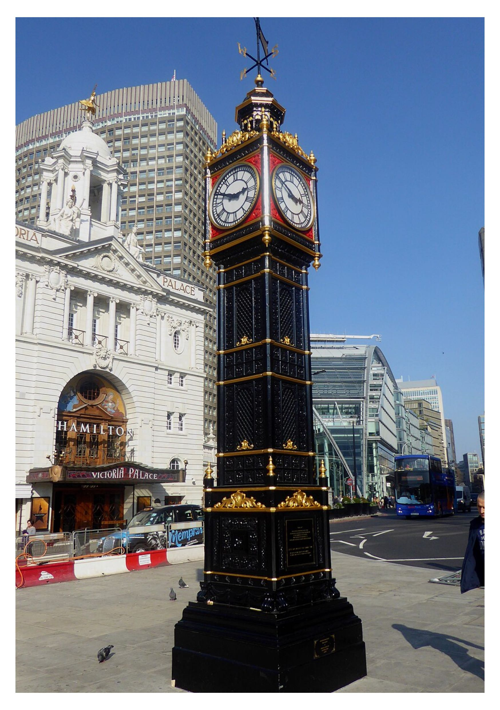
En approchant de Victoria, vous découvrez Little Ben, une petite réplique de la célèbre horloge de Westminster. Elle se trouve près de Victoria Station et constitue l’une des curiosités les plus amusantes du parcours.
L’anecdote : Little Ben a été installé à la fin du XIXᵉ siècle. Son apparence rappelle évidemment Big Ben, mais dans une version beaucoup plus petite. C’est le genre de monument que beaucoup de visiteurs passent devant sans le remarquer.
Le jeu : après avoir admiré l’immense Big Ben quelques minutes plus tôt, cherchez maintenant son « petit cousin ».
G — Little Ben · 2 Wilton Road · The little brother of a huge clock
Near Victoria you find Little Ben, a small replica of Westminster’s famous clock, by Victoria Station — one of the most playful curiosities on the route.
Anecdote: Little Ben was installed in the late 19th century. It clearly echoes Big Ben, but on a much smaller scale — the kind of landmark many visitors walk past without noticing.
The game: after admiring the huge Big Ben earlier, look for its “little cousin”.
G — Little Ben · 2 Wilton Road · El hermano pequeño de un reloj inmenso
Cerca de Victoria descubres Little Ben, una pequeña réplica del famoso reloj de Westminster, junto a Victoria Station: una de las curiosidades más divertidas del recorrido.
Anécdota: Little Ben se instaló a finales del siglo XIX. Recuerda claramente a Big Ben, pero en versión mucho más pequeña: el tipo de monumento que muchos visitantes pasan de largo sin notar.
El juego: después de admirar el inmenso Big Ben, busca ahora a su «primo pequeño».
H — Buckingham Palace · Le Londres royal
Dernière grande étape du parcours aller : Buckingham Palace. Après avoir traversé le Londres politique, vous arrivez au cœur du Londres monarchique. La façade du palais est immédiatement reconnaissable, mais l’expérience la plus intéressante consiste à observer l’ensemble : les grilles, les gardes, le Victoria Memorial et l’immense espace qui précède le palais.
L’anecdote : Buckingham Palace n’a pas toujours été un palais royal. Le bâtiment était à l’origine une maison privée connue sous le nom de Buckingham House. Il devient progressivement une résidence royale et prend une importance particulière sous le règne de la reine Victoria.
À ne pas manquer : si votre visite coïncide avec une relève de la garde, l’expérience devient particulièrement spectaculaire. Mais attention à une confusion fréquente : la cérémonie de Horse Guards Parade est distincte de la relève de la garde de Buckingham Palace.
Anecdote : regardez le drapeau au sommet de Buckingham Palace : lorsque le roi est présent, l’étendard royal est hissé. S’il est absent, c’est l’Union Jack qui flotte à sa place.
H — Buckingham Palace · Royal London
Last major stop on the outward leg: Buckingham Palace. After political London, you reach the heart of monarchical London. The façade is instantly recognisable, but the most interesting experience is to take in the whole scene: the gates, the guards, the Victoria Memorial and the vast space in front of the palace.
Anecdote: Buckingham Palace was not always a royal palace. It began as a private house known as Buckingham House, gradually becoming a royal residence and gaining particular importance under Queen Victoria.
Don’t miss: if your visit coincides with the Changing of the Guard, the experience is especially spectacular. Note: the Horse Guards Parade ceremony is different from the Changing of the Guard at Buckingham Palace.
Anecdote: look at the flag on top of Buckingham Palace: when the King is in residence, the Royal Standard is flown. When he is away, the Union Jack flies in its place.
H — Buckingham Palace · El Londres real
Última gran etapa del trayecto de ida: Buckingham Palace. Tras el Londres político, llegas al corazón del Londres monárquico. La fachada es reconocible al instante, pero lo más interesante es observar el conjunto: las rejas, la guardia, el Victoria Memorial y el enorme espacio ante el palacio.
Anécdota: Buckingham Palace no siempre fue un palacio real. Empezó como casa particular conocida como Buckingham House; se convirtió progresivamente en residencia real y cobró especial importancia bajo la reina Victoria.
No te lo pierdas: si tu visita coincide con el cambio de guardia, la experiencia es especialmente espectacular. Atención: la ceremonia de Horse Guards Parade es distinta del cambio de guardia de Buckingham Palace.
Anécdota: mira la bandera en lo alto de Buckingham Palace: cuando el rey está presente, se iza el estandarte real. Si está ausente, es la Union Jack la que ondea en su lugar.
I — St James’s Park
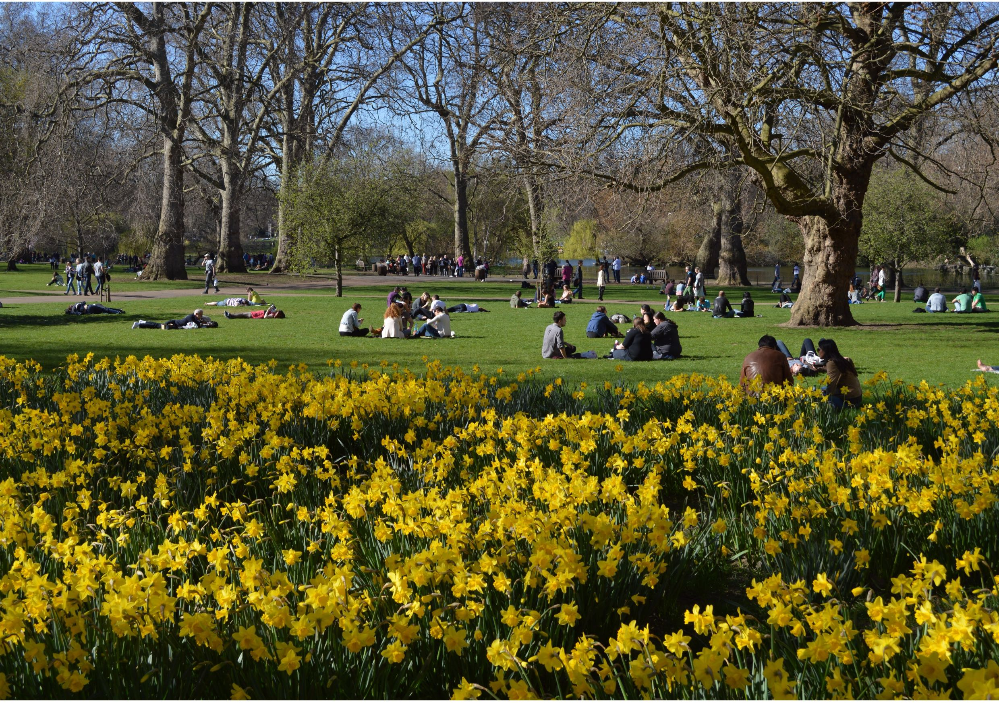
Après Buckingham Palace, le parcours retour traverse St James’s Park. C’est une partie complètement différente de la promenade. Après les institutions politiques et les monuments royaux, vous entrez dans un Londres plus vert et plus contemplatif.
St James’s Park est l’un des espaces verts historiques de Londres. Prenez le temps de regarder le lac, les oiseaux et les jardins.
L’anecdote : le parc est notamment célèbre pour ses pélicans, présents depuis plusieurs siècles grâce à une tradition remontant au XVIIᵉ siècle. C’est assez étonnant : à quelques centaines de mètres seulement du Parlement et de Buckingham Palace, on peut observer tranquillement des pélicans au milieu de Londres.
I — St James’s Park
After Buckingham Palace, the return route crosses St James’s Park — a completely different part of the walk. After political institutions and royal monuments, you enter a greener, more contemplative London.
St James’s Park is one of London’s historic green spaces. Take time for the lake, the birds and the gardens.
Anecdote: the park is famous for its pelicans, present for several centuries thanks to a tradition dating back to the 17th century. Only a few hundred metres from Parliament and Buckingham Palace, you can quietly watch pelicans in the middle of London.
I — St James’s Park
Tras Buckingham Palace, el regreso cruza St James’s Park: una parte completamente distinta del paseo. Después de las instituciones y los monumentos reales, entras en un Londres más verde y contemplativo.
St James’s Park es uno de los espacios verdes históricos de Londres. Tómate tiempo para el lago, las aves y los jardines.
Anécdota: el parque es famoso por sus pelícanos, presentes desde hace siglos gracias a una tradición del siglo XVII. A pocos cientos de metros del Parlamento y de Buckingham Palace, se pueden observar pelícanos en pleno Londres.
J — The Mall · La grande avenue cérémonielle
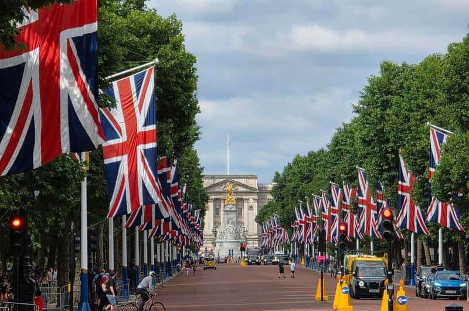
En quittant le parc, vous rejoignez The Mall, la grande avenue qui relie Buckingham Palace à Trafalgar Square. C’est ici que Londres prend une dimension véritablement cérémonielle.
L’anecdote : The Mall est régulièrement utilisé pour les grandes cérémonies royales, les parades et les événements nationaux. Avec ses drapeaux, ses arbres et la perspective vers Buckingham Palace, l’avenue donne une impression presque théâtrale. C’est probablement l’un des endroits où l’on comprend le mieux la mise en scène du pouvoir britannique.
J — The Mall · The great ceremonial avenue
Leaving the park, you join The Mall, the grand avenue linking Buckingham Palace to Trafalgar Square. Here London takes on a truly ceremonial dimension.
Anecdote: The Mall is regularly used for major royal ceremonies, parades and national events. With its flags, trees and the vista towards Buckingham Palace, the avenue feels almost theatrical — one of the best places to understand the staging of British power.
J — The Mall · La gran avenida ceremonial
Al salir del parque, llegas a The Mall, la gran avenida que une Buckingham Palace con Trafalgar Square. Aquí Londres adquiere una dimensión verdaderamente ceremonial.
Anécdota: The Mall se usa con regularidad para grandes ceremonias reales, desfiles y eventos nacionales. Con sus banderas, árboles y la perspectiva hacia Buckingham Palace, la avenida resulta casi teatral: uno de los mejores lugares para comprender la puesta en escena del poder británico.
K — Green Park · Une respiration avant Trafalgar
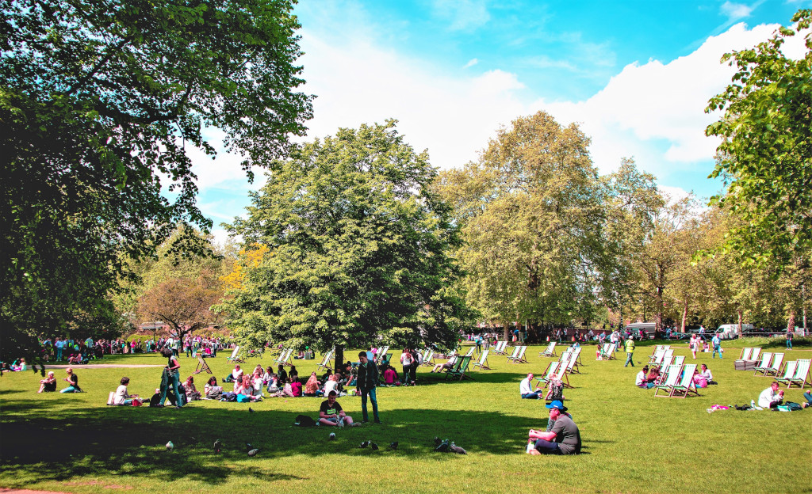
Le parcours traverse ensuite Green Park, l’un des parcs royaux de Londres. Contrairement à certains autres parcs londoniens, Green Park est particulièrement dépouillé : peu de fleurs, beaucoup d’espace et une atmosphère calme.
L’anecdote : la tradition raconte que le parc était autrefois beaucoup plus fleuri, mais que le roi Charles II aurait demandé que les fleurs soient retirées après que son épouse aurait surpris le roi offrant des fleurs à une autre femme. Que l’anecdote soit vraie ou légendaire, elle fait partie des petites histoires qui donnent une personnalité particulière aux parcs royaux.
K — Green Park · A breath before Trafalgar
The route then crosses Green Park, one of London’s royal parks. Unlike some others, it is particularly sparse: few flowers, lots of open space and a calm atmosphere.
Anecdote: tradition says the park was once much more florid, but King Charles II had the flowers removed after his wife caught him offering flowers to another woman. True or legendary, the story is one of the small tales that give the royal parks their character.
K — Green Park · Un respiro antes de Trafalgar
El recorrido cruza después Green Park, uno de los parques reales de Londres. A diferencia de otros, es especialmente sobrio: pocas flores, mucho espacio y una atmósfera calmada.
Anécdota: la tradición dice que el parque estaba antes mucho más florido, pero el rey Carlos II habría ordenado quitar las flores tras sorprenderlo su esposa ofreciendo flores a otra mujer. Sea verdad o leyenda, forma parte de las pequeñas historias que dan carácter a los parques reales.
L — Victoria Embankment · Londres face à la Tamise
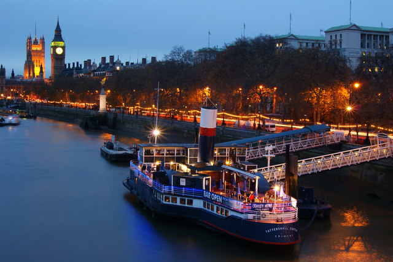
En approchant de la Tamise, vous rejoignez Victoria Embankment. Ici, Londres change encore de visage. Le fleuve accompagne la promenade et offre des perspectives magnifiques sur les monuments de Westminster.
Le moment idéal : en fin de journée, la lumière devient particulièrement intéressante. Les façades prennent des teintes dorées, la Tamise reflète progressivement les lumières de la ville et les monuments commencent à s’illuminer. C’est probablement l’un des meilleurs moments pour photographier Westminster.
L — Victoria Embankment · London facing the Thames
Approaching the Thames, you reach Victoria Embankment. London changes face again: the river accompanies the walk and offers magnificent views of Westminster’s monuments.
Ideal moment: late in the day the light becomes especially fine. Façades turn golden, the Thames gradually reflects the city lights and the monuments begin to glow — one of the best times to photograph Westminster.
L — Victoria Embankment · Londres frente al Támesis
Al acercarte al Támesis, llegas a Victoria Embankment. Londres cambia de nuevo de rostro: el río acompaña el paseo y ofrece magníficas vistas de los monumentos de Westminster.
Momento ideal: a última hora del día la luz se vuelve especialmente interesante. Las fachadas se doran, el Támesis refleja poco a poco las luces de la ciudad y los monumentos empiezan a iluminarse: uno de los mejores momentos para fotografiar Westminster.
M — Trafalgar Square · Retour au cœur de Londres
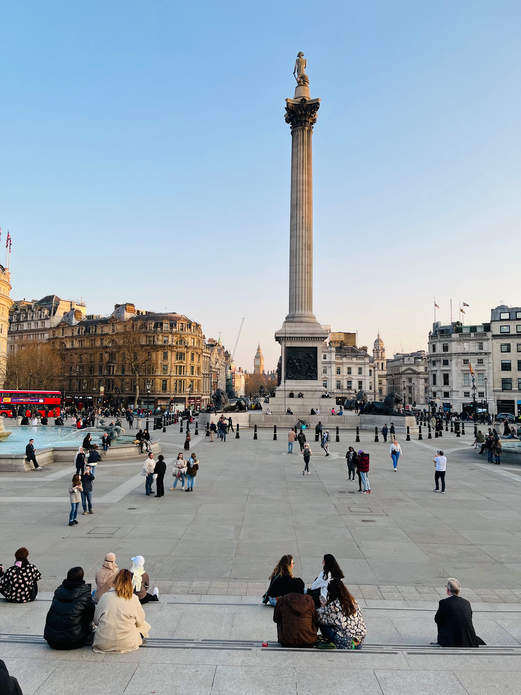
La promenade se termine à Trafalgar Square, là où elle avait commencé. Vous retrouvez l’animation, les artistes de rue, les visiteurs et les Londoniens. Au centre de la place se dresse la colonne de Nelson, entourée des célèbres lions.
L’anecdote : Trafalgar Square commémore la bataille de Trafalgar, remportée par la Royal Navy en 1805 sous le commandement de l’amiral Horatio Nelson. La place est depuis devenue bien plus qu’un monument militaire : c’est un véritable lieu de rassemblement londonien, utilisé pour les célébrations, les manifestations et les grands événements publics.
M — Trafalgar Square · Back to the heart of London
The walk ends at Trafalgar Square, where it began. You return to the bustle, street performers, visitors and Londoners. At the centre stands Nelson’s Column, surrounded by the famous lions.
Anecdote: Trafalgar Square commemorates the Battle of Trafalgar, won by the Royal Navy in 1805 under Admiral Horatio Nelson. The square has become far more than a military memorial: a true London gathering place for celebrations, demonstrations and major public events.
M — Trafalgar Square · Vuelta al corazón de Londres
El paseo termina en Trafalgar Square, donde empezó. Vuelves a la animación, los artistas callejeros, visitantes y londinenses. En el centro se alza la columna de Nelson, rodeada de los famosos leones.
Anécdota: Trafalgar Square conmemora la batalla de Trafalgar, ganada por la Royal Navy en 1805 bajo el almirante Horatio Nelson. La plaza es mucho más que un monumento militar: un verdadero lugar de encuentro londinense para celebraciones, manifestaciones y grandes eventos públicos.
Ambiance du quartier
Le jour : Westminster est solennel, élégant et extrêmement animé. Les visiteurs côtoient les employés des institutions, les touristes du monde entier, les diplomates et les Londoniens qui traversent le quartier pour travailler ou déjeuner. À l’heure du déjeuner, les rues peuvent même donner une impression étonnamment ordinaire : un employé avec son café à la main peut passer devant un palais vieux de plusieurs siècles sans même ralentir. C’est justement ce contraste qui fait le charme de Westminster.
Le soir : le quartier change complètement d’atmosphère. Les rues deviennent plus calmes et les monuments s’illuminent progressivement. Big Ben, Westminster Abbey, le Parlement et la Tamise prennent alors une dimension presque théâtrale. Pour une promenade romantique ou photographique, la fin de journée est particulièrement intéressante.
Atmosphere of the neighbourhood
By day: Westminster is solemn, elegant and extremely busy. Visitors mix with institutional staff, tourists from around the world, diplomats and Londoners crossing the area to work or lunch. At lunchtime the streets can even feel surprisingly ordinary: an office worker with a coffee can walk past a centuries-old palace without slowing down. That contrast is exactly Westminster’s charm.
In the evening: the neighbourhood changes completely. Streets grow quieter and monuments light up. Big Ben, Westminster Abbey, Parliament and the Thames take on an almost theatrical dimension. For a romantic or photographic walk, late afternoon is especially rewarding.
Ambiente del barrio
De día: Westminster es solemne, elegante y muy animado. Visitantes se mezclan con empleados de las instituciones, turistas de todo el mundo, diplomáticos y londinenses que cruzan el barrio para trabajar o almorzar. A la hora de comer, las calles pueden parecer sorprendentemente ordinarias: un oficinista con su café puede pasar ante un palacio de varios siglos sin detenerse. Ese contraste es precisamente el encanto de Westminster.
Por la noche: el barrio cambia por completo. Las calles se calman y los monumentos se iluminan. Big Ben, Westminster Abbey, el Parlamento y el Támesis adquieren una dimensión casi teatral. Para un paseo romántico o fotográfico, el final del día es especialmente interesante.
Où se restaurer ?

- Autour de Trafalgar Square : cafés, pubs et restaurants pour commencer ou terminer la promenade.
- Victoria Embankment : idéal pour une pause avec vue sur la Tamise.
- Autour de Smith Square : quelques adresses plus discrètes, à l’écart des grands axes touristiques.
- Vers St James’s / The Mall : possibilité de prolonger la promenade vers les quartiers plus élégants du centre de Londres.
Conseil : pour profiter réellement du parcours, prévoyez plutôt une pause légère au milieu et un vrai repas à Trafalgar Square ou après la promenade.
Where to eat?
- Around Trafalgar Square: cafés, pubs and restaurants to start or end the walk.
- Victoria Embankment: ideal for a break with a Thames view.
- Around Smith Square: a few quieter addresses away from the main tourist routes.
- Towards St James’s / The Mall: you can extend the walk into more elegant central neighbourhoods.
Tip: to enjoy the route fully, plan a light mid-walk stop and a proper meal at Trafalgar Square or after the walk.
¿Dónde comer?
- Alrededor de Trafalgar Square: cafés, pubs y restaurantes para empezar o terminar el paseo.
- Victoria Embankment: ideal para una pausa con vistas al Támesis.
- Alrededor de Smith Square: algunas direcciones más discretas, lejos de los grandes ejes turísticos.
- Hacia St James’s / The Mall: se puede prolongar el paseo hacia barrios más elegantes del centro.
Consejo: para disfrutar del recorrido, prevé una pausa ligera a mitad de camino y una comida de verdad en Trafalgar Square o después del paseo.
Comment venir ?
Métro : les stations les plus pratiques sont Charing Cross · Embankment · Westminster · St James’s Park · Victoria. Elles permettent d’accéder facilement aux différentes parties du parcours.
Bus : de nombreuses lignes desservent Westminster et permettent de rejoindre facilement Trafalgar Square, Whitehall, Victoria, Buckingham Palace et les environs.
How to get there?
Tube: the most practical stations are Charing Cross · Embankment · Westminster · St James’s Park · Victoria — easy access to different parts of the route.
Bus: many lines serve Westminster and link Trafalgar Square, Whitehall, Victoria, Buckingham Palace and the surrounding area.
¿Cómo llegar?
Metro: las estaciones más prácticas son Charing Cross · Embankment · Westminster · St James’s Park · Victoria, con acceso fácil a las distintas partes del recorrido.
Autobús: muchas líneas sirven Westminster y permiten llegar a Trafalgar Square, Whitehall, Victoria, Buckingham Palace y alrededores.
À ne pas manquer
- La relève de la garde — à Horse Guards Parade, pour découvrir une cérémonie militaire emblématique.
- Les monuments au coucher du soleil — essayez d’être près de Westminster Bridge ou de Victoria Embankment lorsque la lumière commence à tomber.
- Une croisière sur la Tamise — depuis l’eau, Big Ben, le Parlement et le London Eye prennent une toute autre dimension.
- Les vues sur le London Eye et Big Ben — depuis Westminster Bridge, la perspective permet de réunir dans un même regard la Tamise, Big Ben, le Palace of Westminster et le London Eye.
Don’t miss
- Changing of the Guard — at Horse Guards Parade, an emblematic military ceremony.
- Monuments at sunset — try to be near Westminster Bridge or Victoria Embankment as the light fades.
- A Thames cruise — from the water, Big Ben, Parliament and the London Eye take on another dimension.
- Views of the London Eye and Big Ben — from Westminster Bridge you can frame the Thames, Big Ben, the Palace of Westminster and the London Eye in one glance.
No te pierdas
- El cambio de guardia — en Horse Guards Parade, ceremonia militar emblemática.
- Los monumentos al atardecer — intenta estar cerca de Westminster Bridge o Victoria Embankment cuando cae la luz.
- Un crucero por el Támesis — desde el agua, Big Ben, el Parlamento y el London Eye adquieren otra dimensión.
- Vistas del London Eye y Big Ben — desde Westminster Bridge se pueden reunir en una sola mirada el Támesis, Big Ben, el Palace of Westminster y el London Eye.